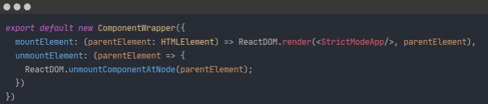
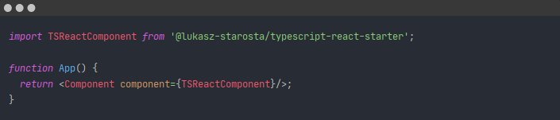

GitHub
GitHub
micro-connect
Seamlessly connect React, Angular and plain JavaScript or TypeScript applications into one.
What is micro-connect?
micro-connect provides the resources necessary to create applications using different popular technologies at the same time.
It allows you to embed components written in different technologies into your application.
Using micro-connect does not require you to overhaul your configuration. Just import it and your custom component and use it inside your application.
You really want this library in your React app but it is only available in Angular? Not a problem!
You really want this library in your React app but it is only available in Angular? Not a problem!
You really want this library in your React app but it is only available in Angular? Not a problem!
How does micro-connect work?
micro-connect wraps your components from different technologies into reusable Components, which can be bundled, deployed and imported in any other application.
Your component
Your hosting application
micro-connect will also easily work with non-React hosting applications. You simply have to manage the component lifecycle yourself:
Component.mount(document.body)